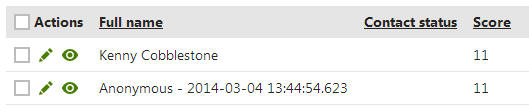

Using contact scoring - example
The following step-by-step example defines a score on the sample Corporate site and demonstrates how the system adds score points for contacts that match the rules.
Prerequisites:
Logging of activities is enabled for the website.
Creating sample scores
Open the Scoring application.
Click New score.
Enter the following details in the New score dialog:
Display name: Interested in smartphones
Description: enter text describing the score
Enabled: yes (selected)
Creating a new score
Click Save.
The system creates the score and opens the General tab of the score's editing interface.
Switch to the Rules tab and click New rule.
Specify the following configuration options in the New rule dialog:
Rule name: Browsed smartphones
Score value: 1
Rule type: Activity
Activity: Page visit
Activity URL: Starts with http://www.mysite.com/Products/Smartphones
Enter your URL of the Products/Smartphones section. The URL must be absolute.
Recurring rule: yes (checked)
This rule adds one score point to contacts who view any page in the Products/Smartphones section of the website (i.e. the list of available smartphone products and individual smartphone detail pages). The rule is recurring, which means that points are added even for repeated visits of the pages.
Leave the remaining options blank or with their default values and click Save.
Click New rule next to the Save button and enter the following configuration:
Rule name: Works as manager
Score value: 5
Rule type: Attribute
Attribute: Job title
Condition: Contains manager
This attribute rule adds 5 score points to contacts who have the word manager in their job title (such contacts are likely to need smartphones in their job).
Save the rule and repeat the procedure one more time to create the final rule:
Rule name: Has business phone
Value: 5
Rule type: Attribute
Attribute: Business phone
Condition: Is not empty
This rule adds 5 score points to contacts who have a business phone number (such contacts can also be considered as potential smartphone buyers).
If you switch back to the score's Rules tab, you can see a list of the defined rules.
List of created scoring rules
Kentico EMS required
Features described on this page require the Kentico EMS license.
Trying out the scoring functionality
Now that you have defined the rules for the score, you can test how the system adds points to contacts.
This example uses two new contacts, which the system creates automatically when you access the website as a public visitor from two different browsers. If you already have contact information stored in your browsers, your contact data may be different, but the scoring functionality still works as demonstrated in the example.
Sign out of the administration interface, navigate to the /Products/Smartphones section of the Corporate site and view several product detail pages of smartphones.
Sign in to the administration interface and open the Scoring application.
Edit (
 ) the Interested in smartphones score.
) the Interested in smartphones score.Open the Contacts tab.
You should see a new contact with a score that matches the number of pages that you viewed in the Smartphones section.
Open a different web browser and access the website's /Products/Smartphones section as an anonymous visitor again. This time, only view the list of smartphones once.
Switch back to the first browser and refresh the Contacts tab.
You should see another contact, with only one point added for viewing the list of smartphones.
Click View contact details (
) next to the second contact.A contact profile opens on the Profile tab.
Click Edit to modify the properties of the given contact. The options are the same as in the contact editing interface (see the Working with contacts for details).
In the Contact details category, fill in a Business phone number and a Job title containing the word manager.
Click Save and Close the dialog.
Back on the Contacts tab, you should see that the second contact now has 11 points (you may need to refresh the tab). The system added 5 points because the contact has a business phone and another 5 due to the word manager in the contact's job title.

Click View score details (
 ) next to the contact.
) next to the contact.The score details dialog shows exactly which rules have contributed to the contact's total score.